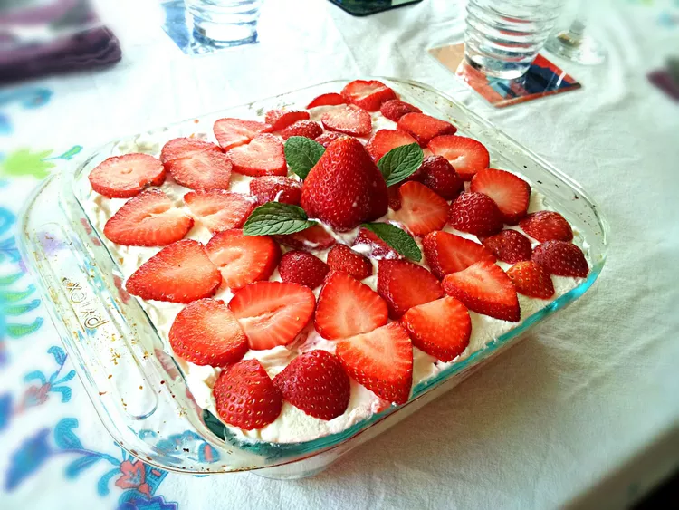

Strawberry Tiramisu without Eggs

Description
I love traditional Italian tiramisu but I have a young child so I created a version without eggs or alcohol! My tiramisu combines fresh strawberries, cream cheese, and whipped cream and can be made in advance.
Ingredients
- 3 ½ cups fresh strawberries, hulled, divided
- 7 tablespoons white sugar, divided
- 2 lemon, juiced, divided
- 2 tablespoons water, or as needed (Optional)
- 2 (8 ounce) packages cream cheese, softened
- 1 cup heavy whipping cream
- ½ (12 ounce) package ladyfinger cookies, or more as needed
Steps
- Reserve 3 or 4 strawberries for the garnish. Slice 1/2 of the remaining strawberries and place in a bowl with 2 tablespoons sugar and the juice of 1 lemon. Stir to combine and set aside.
- Transfer remaining strawberries into a blender. Add 2 1/2 tablespoons sugar and remaining lemon juice. Blend until smooth.
- Transfer strawberry puree to a small saucepan. Cook over low heat, stirring often, until thickened to a sauce-like consistency, 5 to 10 minutes. Taste and add more sugar if strawberry sauce is not sweet enough. Add some water if sauce is too thick. Remove from heat and let cool completely.
- Combine cream cheese and 2 1/2 tablespoons sugar in a large bowl; beat with an electric mixer until smooth and creamy. Whip cream in a separate bowl until soft peaks form. Fold into the cream cheese mixture.
- Arrange ladyfingers snugly in a single layer inside a square glass dish. Pour 1/2 of the strawberry sauce over the ladyfingers. Spread 1/2 of the cream cheese mixture on top. Scatter 1/2 of the marinated sliced strawberries onto the cream cheese mixture. Repeat layers with remaining ladyfingers, sauce, and sliced strawberries. Spread the remaining cream mixture evenly over the top; garnish with the reserved strawberries.
- Cover tiramisu with plastic wrap and refrigerate, 4 hours to overnight.
Cook's Notes:
- You could use Italian mascarpone instead of cream cheese if you prefer.
- You can prepare this tiramisu up to 48 hours in advance. Decorate with fresh strawberries before serving. Leftovers will keep in the fridge for 1 or 2 days, depending on when you made it!